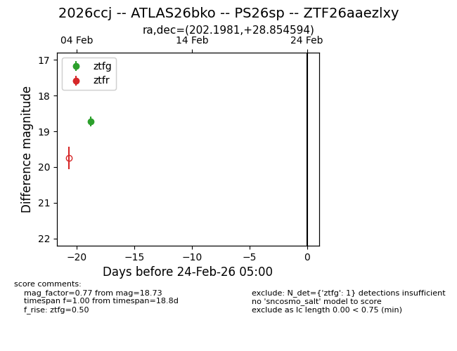
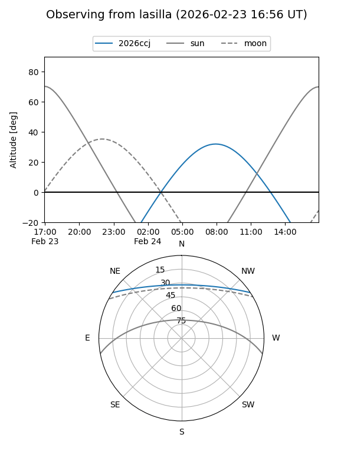
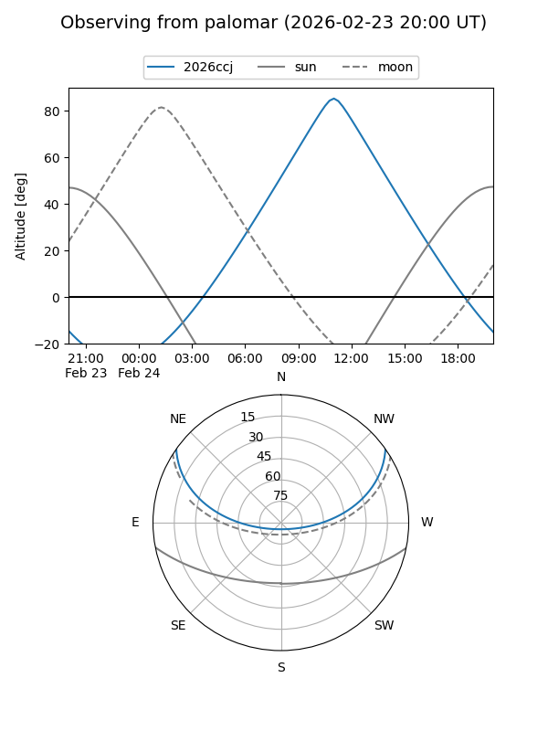

2026ccj
Target 2026ccj at 2026-02-24 09:08
Aliases and brokers:
FINK: link
Lasair: link
ALeRCE: link
TNS: link
YSE: link
alt names
ZTF26aaezlxy (ztf,fink_ztf)
2026ccj (tns,yse)
PS26sp (panstarrs)
ATLAS26bko (atlas)
Coordinates:
equatorial (ra, dec) = 202.1981,+28.85459
equatorial (HMS+DMS) = 13:28:47.55,+28:51:16.54
galactic (l, b) = (46.9257,+81.57758)
Flags:
Photometry:
last ztfg=18.73
1 ztfg detections
Lightcurve

Visibility


Additional plots